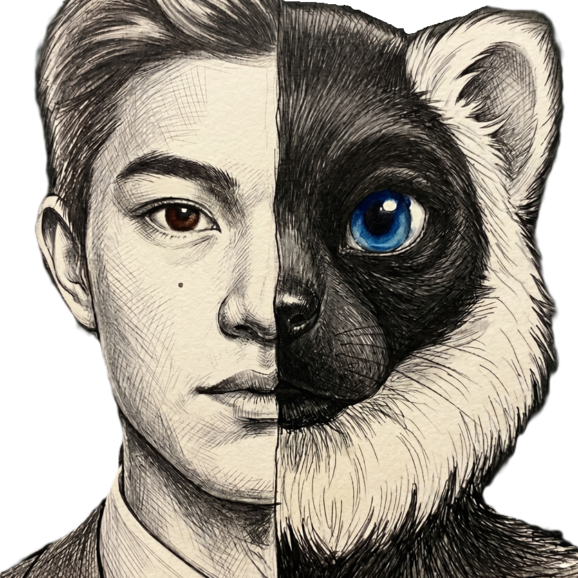

Identity / FursonaRyusei Ethan Ueno (he/they)
Researcher | Queer Studies, Furry Fandom
I see society not as a fixed structure, but as a living network of connections that are constantly drawn, broken, and redrawn. My research focuses on tracing these invisible threads, exploring how we negotiate our shared realities and how communities create their own spaces of belonging.
This perspective is deeply intertwined with my queer identity and life within the furry fandom. My fursona—a Black-and-White Ruffed Lemur—is more than just an avatar; it is an active medium through which I navigate the world. By bridging academic inquiry with personal identity, I examine how playfulness and creativity can gently challenge conventional norms and propose new ways to connect.
Research Interests
Academic Background
-
2024 - Present
Ph.D. Candidate in International Public Policy
University of TsukubaFocusing on the intersection of Queer Studies and Furry Fandom.
-
2022 - 2024
Master of Arts in International Public Policy
University of TsukubaThesis: "Domestic partnership at the prefectural-level in Japan."
-
2018 - 2022
Bachelor of Arts in Law
Hosei University
Academic Appointments
-
2025 - Present
Teaching Fellow
University of Tsukuba- International Public Policy
- Area Studies
- Constitutional Law I & II
- Peace and Law / Peace Studies
- Seminar of Constitutional Law I, III & IV
-
2022 - Present
Teaching Assistant
University of Tsukuba- Intro to Inclusive Smart Society (with OSU)
- Constitutional Law of Japan
- Constitutional Law II
- Introduction to International Law
- International Human Rights Law
- Administrative Law
- Seminar of Constitutional Law III
- Tutorial for Frontiers of Legal Studies
- Culture and Development
- Methodology for Global Issues
- Literacy in Global Issues
- English Debate 2
- Special Lecture: University and Academic Inquiry
- National High School "Research Exploration" Camp in TSUKUBA ONLINE
-
2022 - 2024
Research Assistant
University of TsukubaSupported ongoing research projects through literature review, data collection, and manuscript preparation.
-
2023 - 2026
International Student Tutor
University of TsukubaProvided comprehensive academic and daily life support for incoming international students. Assisted with course registration, university administrative procedures, and cross-cultural adaptation, ensuring a smooth transition into the academic community.